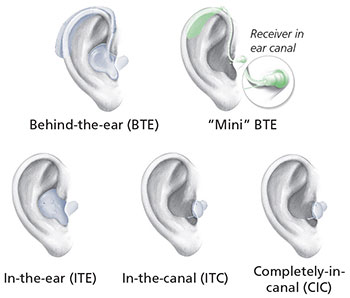
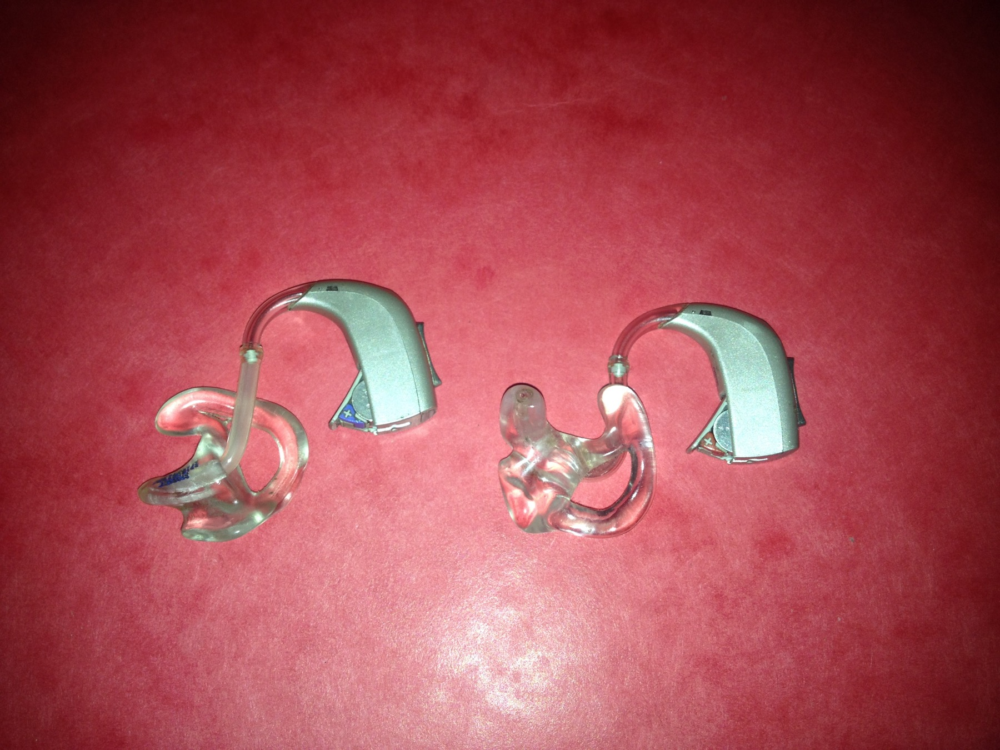
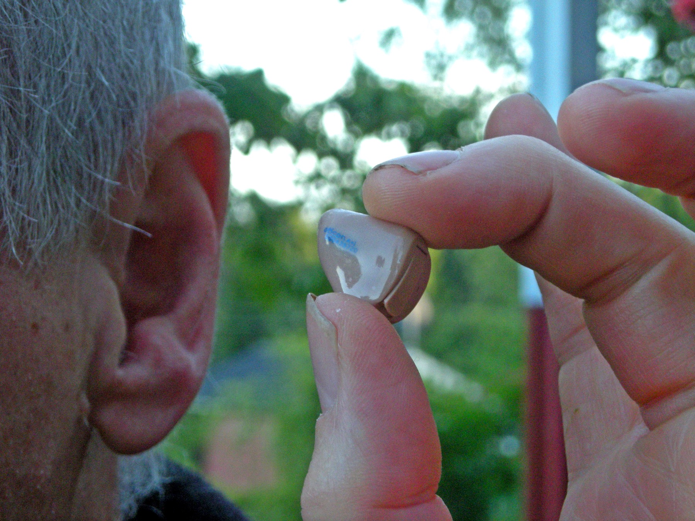
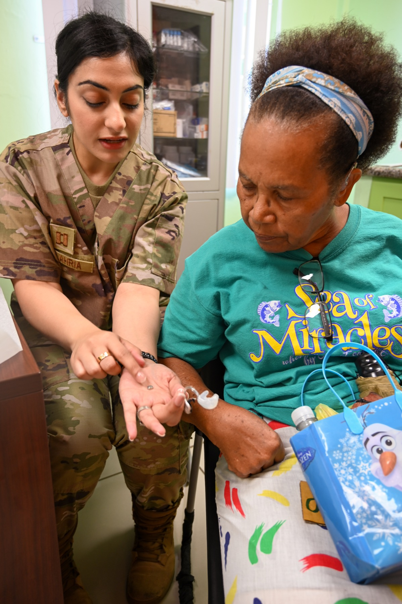
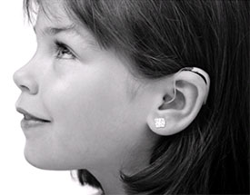
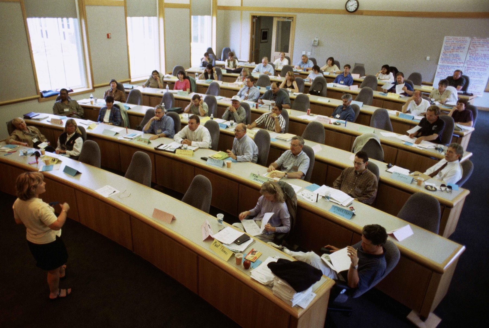
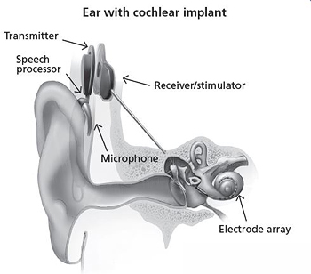
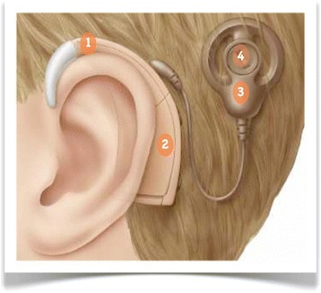

Hearing Aids, Cochlear Implants & Aural (Re)habilitation
Technology can improve access to sound, but a device by itself does not deliver understanding or participation. This lesson covers how hearing aids, hearing assistive technology, and cochlear implants create different kinds of access, and what the SLP contributes to the rest of the work.
What you should be able to do afterward
By the end of this lesson you should be able to:
- Explain the hearing-aid signal path, why a hearing aid is not a volume control, and how styles trade off against a person's needs.
- Distinguish verification from validation, and explain how remote microphones and other hearing assistive technology improve access.
- Compare the acoustic path of a hearing aid with the electrical path of a cochlear implant, and describe the CI process from evaluation through activation, mapping, and follow-up.
- Explain why CI candidacy and outcomes cannot be reduced to one audiogram number or one speech score.
- Apply a functional auditory-skills framework, plan with families and adults rather than for them, and identify the SLP's observations, supports, and referral boundaries.
Why this matters for SLPs
You will work with clients whose devices are already fitted, and the question in front of you is rarely "which device?" It is closer to: is this device actually working today, what is still hard, and which layer of support would help. That question sits squarely in the SLP's scope, and answering it well requires knowing what the technology can and cannot do.
Hearing Aids & Hearing Assistive Technology
What the device actually does to sound, how a fitting is checked, and what to do when the room itself is the problem.
1.1 · Hearing aids improve access to sound
Louder and clearer are not the same thing
A hearing aid is a wearable electronic device that processes and amplifies sound. Its goal is to make useful sounds, especially speech, more audible and comfortable for a person with hearing loss.
It can improve access. It does not restore typical cochlear function, make speech perfectly clear in every setting, remove all background noise, or replace communication strategies and environmental supports. Benefit depends on the hearing loss, the fitting, the listening environment, consistent access, and the person's goals.
1.2 · The basic signal path
Four parts, one route
What each part does
| Part | Main job |
|---|---|
| Microphone | Converts sound in the environment into an electrical signal. |
| Digital processor / amplifier | Analyzes the signal and applies programmed gain and other processing. |
| Receiver | A tiny loudspeaker that changes the processed signal back into acoustic sound. |
| Battery or rechargeable cell | Supplies power. |
The amplified sound still travels through the ear canal and middle ear to the cochlea. A hearing aid therefore uses the listener's remaining auditory function. It does not bypass the cochlea, which is the single most important structural difference between a hearing aid and a cochlear implant.
Calling a hearing aid a volume knob misses most of what the device is designed to do. A simple volume control changes all sounds together. A hearing aid processes sound differently across frequencies and input levels.
First, the microphone converts sound into an electrical signal. The processor analyzes that signal in frequency bands. Because a hearing loss may affect some frequencies more than others, the hearing aid can provide more gain where it is needed and less where it is not. The fitting prescription is based partly on the person’s audiogram, but it must also be verified and adjusted for that individual.
Sound level matters too. Many people with sensorineural hearing loss have a smaller usable range between the softest sound they can hear and a sound that becomes uncomfortably loud. Compression helps fit speech into that range. The hearing aid may provide relatively more gain for soft sounds. As the input becomes louder, the output still increases, but more gradually. Maximum-output settings also help keep amplified sound within safe and comfortable limits.
Other features may reduce steady noise, emphasize sound from a chosen direction, or connect to a remote microphone. These features can improve access, but they do not restore typical cochlear function or make every listening environment easy.
A hearing aid is therefore better understood as a personalized sound-processing system, not simply a louder button.
1.3 · More than a volume control
Different gain at different frequencies, and at different levels
Hearing loss is often different across frequencies, so a hearing aid can provide different amounts of gain, the increase from input to output, in different frequency regions. The fitting also changes with input level.
Compression, in plain language
Many people with sensorineural hearing loss have a reduced usable range between sounds that are just audible and sounds that are uncomfortably loud. Compression helps fit a wide range of environmental sounds into that smaller listening range: add enough gain to soft sounds to make them audible, keep average speech audible and comfortable, and let output for loud sounds increase more gradually so it stays tolerable. A maximum-output setting prevents the device from producing sound above the planned limit.
These controls are individualized. The same audiogram does not guarantee the same final settings or the same experience.
Selected features, and their limits
- Directional microphones can emphasize sound from a chosen direction, often in front of the listener. They work best when the listener can face the desired talker.
- Digital noise reduction may improve comfort in steady noise. It does not guarantee better speech understanding.
- Feedback management helps reduce whistling, but feedback can also signal poor fit, blockage, or another problem that needs attention.
- Telecoils, Bluetooth, and wireless accessories can send sound from a phone, loop, television, or remote microphone to the device.
- Programs may provide different settings for common situations. More programs are not automatically better; the listener has to be able to use them.
1.4 · Styles are tradeoffs, not a ranking
Smaller is not the same as better

Four common styles
| Style | Basic arrangement | Possible strengths | Possible tradeoffs |
|---|---|---|---|
| Behind-the-ear (BTE) | Device behind the ear; sound travels through tubing to an earmold. | Broad fitting range, durable, works well with pediatric earmolds and accessories. | More visible; tubing and earmold require care. |
| Receiver-in-canal (RIC) | Processor behind the ear; receiver sits in the ear canal. | Small case, flexible fittings, often an open canal for appropriate losses. | Receiver is exposed to moisture and wax; small parts can be hard to handle. |
| In-the-ear (ITE) | Custom device fills part or most of the outer-ear bowl. | Controls and battery may be easier to handle than smaller custom devices. | More visible than canal styles; suitability depends on ear anatomy and hearing needs. |
| In-the-canal / CIC | Custom device sits partly or deeply in the canal. | Less visible; may use outer-ear acoustics. | Small controls and batteries; limited space, power, and wireless options; wax and moisture exposure. |
Selection can include hearing thresholds, ear anatomy, manual dexterity, vision, cognition, age, comfort, listening goals, phone and accessory needs, maintenance, cost, and preference.
Behind-the-ear versus in-the-ear hearing aids
Open this video in a regular browser ↗

Routing sound from one side
A CROS system places a microphone on an ear that receives little or no useful sound and routes the signal to a device at the better ear. A BiCROS system does the same while also amplifying sound for hearing loss in the better ear. These systems can improve awareness from the poorer side, but they do not restore true two-ear hearing or normal sound localization.
1.5 · Fitting is a cycle, not a purchase
Six stages, then around again
- Assess hearing and communication needs. The audiologist considers the audiologic results, ear health, daily situations, access needs, abilities, and preferences.
- Select and program. Device style, features, coupling, and starting settings are chosen for the person.
- Verify. Measure whether the device is producing the intended output at the ear.
- Orient. Teach insertion, removal, charging or battery changes, cleaning, controls, accessories, realistic expectations, and troubleshooting.
- Validate. Determine whether the person is receiving meaningful benefit in daily communication.
- Follow up. Adjust the plan as the person's experience, hearing, ears, or goals change.
1.6 · Verification and validation answer different questions
Is it working, and is it helping?
Two questions, two kinds of evidence
| Verification | Validation | |
|---|---|---|
| Main question | Is the device producing the intended output at the ear? | Is the intervention helping this person in meaningful situations? |
| Examples | Real-ear or probe-microphone measures; age-appropriate ear-specific measures when needed; output and safety checks. | Interviews, questionnaires, functional goals, reports from the listener and partners, speech or communication tasks. |
| What it can reveal | Important speech sounds are below target, loud inputs are excessive, or the response needs adjustment. | Meetings remain difficult, the device is not being used, goals changed, or additional strategies or access tools are needed. |
In a real-ear measurement, a thin probe tube measures amplified sound near the eardrum while calibrated speech-like signals are presented, and the audiologist compares the response with evidence-based targets across input levels. For infants and young children, child-appropriate ear-specific measures help account for the small ear canal. Aided sound-field thresholds may add useful functional information, but they do not replace probe-microphone verification.
The two forms of evidence belong together. An accurately verified device may still need better orientation, a remote microphone, environmental changes, communication strategies, or different goals. And a positive self-report does not prove that all speech information is audible.
A hearing aid can be programmed according to an audiogram and still need careful checking. That is why audiologists use both verification and validation.
Verification asks, “Is the hearing aid producing the intended sound at the ear?” One important method is real-ear measurement. A thin probe tube measures amplified sound near the eardrum while speech-like signals are presented. The audiologist compares the response with evidence-based targets for soft, average, and loud inputs and checks that the maximum output is not excessive. For infants and young children, ear-specific measurements can also help account for the small size of the ear canal.
Validation asks a different question: “Is this fitting helping the person in everyday life?” The audiologist may use interviews, questionnaires, functional goals, speech-understanding tasks, or reports from the listener and communication partners. Validation may reveal that speech is audible in the clinic but meetings, classrooms, or family conversations are still difficult.
Neither step replaces the other. A person might report improvement even when important speech sounds remain below target. Another person might have an accurately verified fitting but still need different features, communication strategies, or environmental support.
Verification checks the device’s output. Validation checks the person’s experience and outcomes. Together, they guide follow-up and keep the fitting connected to real communication needs.
1.7 · Orientation, daily checks, and the SLP's boundary
Check access before you interpret behavior
A device cannot support communication if it is absent, uncharged, blocked, damaged, or connected incorrectly. A brief check before communication work can prevent an access problem from being mistaken for a language or listening problem, which is one of the most common and most avoidable errors in this work.
A practical daily routine. Ask whether the person notices a change and whether the device feels comfortable. Confirm the correct device is present and seated correctly. Check battery or charge status and visible damage. Inspect the earmold, dome, tubing, microphone openings, and wax guard for obvious blockage, following the setting's protocol. Confirm accessories are connected and the program is correct. Complete a listening or functional check only if trained and authorized. Then document the observation, preserve communication access, and refer unresolved concerns to the audiologist.

1.8 · Children, and U.S. over-the-counter devices
Two situations with very different rules

For children, consistent access matters during language learning, but device use should never be treated as the child's only route to language. Pediatric services may include child-specific prescriptions and verification, earmold replacement as the ear grows, remote-microphone access, family coaching, school collaboration, and ongoing hearing monitoring. Signed, visual, written, and spoken supports can be combined according to the child's and family's communication plan.
In the United States, over-the-counter (OTC) hearing aids are a regulated category for adults age 18 or older who perceive mild-to-moderate hearing loss. They are not the same as unregulated sound amplifiers, and they are not intended for children. Prescription devices and professional care remain available at any age when desired or indicated, and regulations differ outside the United States.
When to seek professional guidance instead
Uncertainty about the hearing difficulty, limited benefit, a sudden or marked change, pain or drainage, significant asymmetry, dizziness, or another concerning sign all call for medical or audiologic evaluation rather than a self-fitted device.
Sources: FDA OTC hearing-aid guidance and the NIDCD hearing-aid overview.
1.9 · When the room is the problem
Distance, noise, reverberation, and the signal-to-noise ratio
Hearing assistive technology systems (HATS) supplement or work alongside personal hearing devices. They are especially useful when distance, background noise, and reverberation reduce access. The signal-to-noise ratio (SNR) compares the level of a target signal with competing sound: a more favorable SNR means the target is stronger relative to the noise.

Why a remote microphone helps
A teacher, meeting leader, or other talker wears or places a microphone close to the mouth, and the system sends that signal to the listener's hearing aids, cochlear-implant processor, or separate receiver. Moving the microphone close to the desired talker captures a stronger signal before room distance and reflections weaken it. The system does not erase noise, and placement, muting, connection, and user training all still matter.
Imagine trying to hear a teacher from the back of a noisy classroom. The teacher’s voice becomes weaker as it travels across the room. Meanwhile, nearby conversations, chair movement, ventilation noise, and reverberation reach the listener too.
What matters is not only how loud the teacher is. It is the signal-to-noise ratio: the level of the target voice compared with competing sound. When the target is much stronger than the noise, the signal-to-noise ratio is better. When they are close in level, understanding usually requires more effort.
A remote microphone changes this relationship by moving the microphone close to the talker. It captures a strong, direct speech signal before distance and room reflections weaken it. That signal is then sent wirelessly to the listener’s hearing aids, cochlear implant processor, or another receiver.
The system does not repair the auditory system, and it does not remove every competing sound. Instead, it improves access by delivering a cleaner version of the chosen speaker’s voice. Correct microphone placement, connection, and use still matter.
Remote microphones can help in classrooms, meetings, vehicles, tours, and other situations where distance and noise are major barriers. The basic principle is simple: improve listening by bringing the microphone closer to the sound the person wants to hear.
Other listening-access examples
- Hearing loop: sends an electromagnetic signal to a compatible telecoil.
- FM or digital wireless system: sends a microphone signal to a receiver or personal device.
- Infrared system: sends audio by light within a room; walls contain the signal, but line of sight matters.
- Hardwired personal amplifier: connects a nearby microphone and listening output by cable.
- Direct streaming: sends phone, media, or computer audio to compatible devices.
- Captioning or speech-to-text: converts spoken information into visual text. This is communication access even though it does not amplify sound.
1.10 · Listening technology and alerting technology solve different problems
Match the tool to the problem
Three different needs
| Need | Examples | Information route |
|---|---|---|
| Understand a distant talker | Remote microphone, loop, FM or digital system | Carries the target audio closer to the listener. |
| Access media or calls | Direct streaming, TV system, captioned phone, captions | Delivers audio and/or text directly. |
| Notice an event | Flashing or vibrating smoke alarm, doorbell signaler, bed shaker, baby-cry alert | Changes an auditory alert into visual, tactile, or stronger multimodal information. |
A remote microphone is not the solution to a silent smoke alarm, and a flashing alarm does not improve a lecture's SNR.
Cochlear Implants
A different signal, a surgical process, a team decision, and outcomes that genuinely vary.
2.1 · Hearing aids and cochlear implants create different signals
Acoustic sound versus coded electrical stimulation
Side by side
| Hearing aid | Cochlear implant | |
|---|---|---|
| Main action | Shapes and amplifies acoustic sound | Converts sound into coded electrical stimulation |
| Final delivery | A receiver sends acoustic sound into the ear canal | An implanted electrode array stimulates auditory neurons in the cochlea |
| Uses remaining hair-cell function? | Yes | Bypasses much of the damaged hair-cell transduction process |
| Surgery required? | No | Yes |
| Typical clinical question | Can appropriately fitted amplification provide useful access? | Is aided benefit limited enough that an implant evaluation is appropriate, given the whole clinical picture? |
Both devices begin with a microphone and a sound processor. Neither restores typical hearing, and neither guarantees speech understanding. The right tool depends on the person's hearing, aided performance, anatomy and health, communication needs, goals, and preferences.
2.2 · External and internal components
What is worn, and what is implanted

External. A microphone picks up sound. A sound processor analyzes it and creates a coded signal. A transmitting coil sends information and power across the skin by radio-frequency link, held in place by a magnet. The magnet aligns the coils; it does not carry sound through the skin by itself.
Internal. An implanted receiver/stimulator receives the coded signal, and an electrode array placed in the cochlea delivers patterns of electrical stimulation.
The implant does not send ordinary acoustic sound into the inner ear. It provides a different input that the auditory system and brain must learn to interpret.

2.3 · From sound to an auditory percept
Following the coded signal inward
The processor divides sound information into frequency regions. The electrode array uses different locations in the cochlea to represent broadly different frequency regions, and the timing and amount of current carry additional information. This is an approximation of the cochlea's organization, not a one-electrode-for-one-pitch replacement of thousands of hair cells.
The device bypasses much of the damaged sensory transduction, but it does not bypass the auditory nerve or the brain. Adequate anatomy and a functioning auditory pathway are therefore relevant to the evaluation.
Hearing aids and cochlear implants both begin by picking up sound, but they deliver information through different paths.
In a hearing aid, a microphone converts sound into an electrical signal. The processor shapes and amplifies that signal, and a receiver changes it back into acoustic sound. The sound travels through the ear canal and middle ear to the cochlea. The hearing aid therefore works with the person’s remaining cochlear function. It can make selected parts of sound more audible, but it cannot directly replace damaged sensory hair cells.
A cochlear implant takes a different route. An external microphone and sound processor analyze the sound. A transmitting coil sends coded information across the skin to the implanted receiver and stimulator. An electrode array inside the cochlea then delivers patterns of electrical stimulation to surviving auditory-nerve fibers.
This bypasses much of the damaged hair-cell transduction process, but it does not bypass the auditory nerve or brain. It also does not reproduce acoustic hearing exactly. The brain must learn how to interpret the new electrical pattern.
A cochlear implant involves surgery, programming, follow-up, and rehabilitation. Candidacy is based on a complete evaluation, including hearing-aid benefit and communication needs, not on a single audiogram number.
Neither device cures hearing loss. Each is one possible tool for improving access, and the most appropriate choice depends on the individual’s hearing, goals, preferences, and clinical findings.
Hearing the difference, as far as a demonstration can show it
Two demonstrations are offered below. Both are optional, and neither is a recording of electrical hearing. One person can approximate aspects of their own perception, and a vocoder can model how reduced spectral detail changes a sample, but CI perception varies with the person, the device settings, the listening history, the task, and the time since activation. A hearing listener also brings none of the CI user's learning and adaptation, which is a large part of what makes the signal usable.
One CI user's perceptual-matching demonstration
Open in a regular browser ↗Vocoder demonstration of speech and music
Open in a regular browser ↗2.4 · Candidacy is an individualized team process
Not one number
An implant evaluation asks whether a cochlear implant is a reasonable option, not whether the person has crossed one universal audiogram cutoff. The team may consider the type and degree of hearing loss; aided speech recognition and functional benefit from appropriately fitted hearing aids; hearing history and duration of reduced auditory access; ear and auditory-nerve anatomy, medical status, and surgical considerations; communication modes, current language access, and daily participation needs; the person's or family's goals, preferences, questions, and understanding of alternatives; ability to attend programming and follow-up, along with supports that can make care accessible; and the criteria used by the clinic, device regulator, and payer.
Children and adults can be evaluated. Some people with usable residual hearing or single-sided deafness may also be candidates. Criteria continue to evolve and differ across countries, devices, clinics, and insurers, so the implant center applies the current rules.
Support needs are a planning question, not an exclusion
If a person will need help attending follow-up, the response is to plan that support, not to treat it as a reason to rule them out. The person and family are central members of the team.
Who contributes what
| Team member | Selected contribution |
|---|---|
| Person and family | Goals, preferences, informed choices, communication priorities, and daily experience |
| Audiologist | Audiologic and aided testing, device counseling, activation, mapping, and monitoring |
| Otolaryngologist / implant surgeon | Medical and anatomical evaluation, surgery, and medical follow-up |
| SLP | Communication assessment and individualized habilitation or rehabilitation within scope |
| Educator or service coordinator, when relevant | Educational access, service coordination, and communication across settings |
Sources: NIDCD cochlear-implant overview and the ASHA Cochlear Implants Practice Portal.
2.5 · A cochlear implant is a process
Surgery is the middle, not the end
- Evaluation and counseling. Audiologic, medical, communication, and functional information are integrated, and benefits, limitations, alternatives, risks, and access preferences are discussed.
- Surgery. The receiver/stimulator and electrode array are implanted. The surgical team discusses risks, imaging, vaccination or other medical needs, and the possibility that residual acoustic hearing may change.
- Healing. The external processor is not usually activated on the day of surgery.
- Activation. The audiologist connects the processor and creates an initial map, the settings that translate acoustic input into electrical stimulation.
- Mapping and monitoring. Lower and upper comfortable stimulation levels and the balance across electrodes are refined over multiple visits, combining objective and behavioral information.
- (Re)habilitation. The user develops meaningful access through experience, listening or communication practice as desired, partner support, and environmental access.
The first sound may be unfamiliar or difficult to interpret. Activation is a starting point, not an instant final outcome.
Cochlear-implant surgery is not the moment when useful sound automatically appears. After the surgical site has had time to heal, the external processor is connected and activated.
During activation and later programming visits, the audiologist creates a map. A map controls how acoustic information is translated into electrical stimulation. The audiologist adjusts lower stimulation levels, upper comfortable levels, and the balance across electrodes. Responses may be measured directly or observed behaviorally, depending on the person’s age and communication abilities.
The first map is a starting point. Sound may seem unfamiliar, mechanical, or difficult to interpret. As the auditory system gains experience, comfortable levels and listening responses can change. Follow-up mapping helps refine the settings, while rehabilitation may support sound awareness, speech understanding, communication strategies, and personally meaningful listening goals.
Outcomes vary widely. They can be influenced by the cause and timing of the hearing difference, duration of limited auditory access, cochlear and auditory-nerve anatomy, previous language experience, additional health or learning factors, device programming, opportunities for consistent access, and the availability of support. Variation is not simply a measure of effort.
Some users gain strong open-set speech understanding. Others receive more limited benefits, such as environmental-sound awareness or support for speechreading. Sign language, captions, visual information, and other communication supports can remain valuable before and after implantation.
A cochlear implant provides a new signal. Mapping, experience, and person-centered support help make that signal meaningful.
2.6 · Outcomes are meaningful, and variable
Wide variation, and what it does not mean
Possible benefits include greater awareness of environmental sound, improved access to spoken language, less reliance on speechreading in some settings, and easier communication. The kind and amount of benefit differ widely.
Factors associated with outcomes include the cause and timing of the hearing difference; duration and consistency of auditory access; cochlear and auditory-nerve anatomy; age and health; language and communication history; additional sensory, learning, or health factors; programming and device use; access to follow-up, education, and personally relevant practice; and the demands of the listening environment.
Variation is not a measure of effort
Some users develop strong open-set speech understanding. Others gain support for environmental awareness, lipreading, or selected listening tasks. Music and speech in noise may remain difficult. Sign language, captions, writing, remote microphones, and visual information can remain valuable before and after implantation. A cochlear implant is an access option, not a cure, and not a measure of a person's commitment, identity, or worth.
2.7 · Common device configurations
Five arrangements, and one common confusion
The brain has to combine different inputs, so device use, mapping, hearing-aid fitting, and rehabilitation may need coordination across ears.
2.8 · Partnership, culture, and communication choice
The decision sits inside a life
Decisions about implantation take place within a person's language, family, culture, community, and values. Deaf people and families do not hold one shared view of cochlear implants. Some people see a CI as a useful access tool, some do not want one, and many combine device use with sign language and Deaf-community participation.
Person- and family-centered care means using accessible language and interpreters or other access supports when needed; explaining expected benefits, uncertainty, risks, alternatives, and follow-up; asking what participation outcomes matter to the person; respecting spoken, signed, written, captioned, augmentative, and multimodal communication; avoiding promises that the device will produce typical hearing or remove the need for visual access; and revisiting goals as experience changes.
Go deeper (optional) · one person's perspective
Heather Artinian at TEDxGeorgetown
Open in a regular browser ↗2.9 · Other implantable devices
Recognition level only
Three other categories
| Device category | Basic route | Selected situations |
|---|---|---|
| Implantable bone-conduction system | Sends vibration through the skull to a functioning cochlea, bypassing part of the outer and middle-ear route | Some conductive or mixed hearing losses, and selected single-sided-deafness cases |
| Middle-ear implant | Mechanically vibrates a middle- or inner-ear structure | Selected people who cannot use, or do not get adequate benefit from, conventional amplification |
| Auditory brainstem implant (ABI) | Stimulates the cochlear-nucleus region of the brainstem, bypassing the cochlea and auditory nerve | Rare cases in which the cochlear nerves are absent or nonfunctional |
These devices are not interchangeable, and each requires specialized audiologic and medical evaluation. Detailed candidacy and programming are beyond this lesson.
Children & Families
Language access first, then skills, routines, environments, and the outcomes that actually matter.
3.1 · Habilitation and rehabilitation describe a skill history
Not simply a child/adult split
Aural habilitation supports the development of auditory and communication skills that have not yet been established. Aural rehabilitation supports the recovery, adaptation, or reorganization of communication after a hearing change.
Children are often receiving habilitation and adults are often receiving rehabilitation, but age is not the defining rule. A child with newly acquired hearing loss may need rehabilitation of earlier skills, and an adult receiving useful auditory input for the first time may be developing new ones. The plan follows the person's history and goals.
In this lesson, aural (re)habilitation is an inclusive shorthand for a broad process:
Aural habilitation and rehabilitation are sometimes described as learning to use a hearing device. The real process is broader.
Habilitation usually refers to developing communication skills for the first time, often with children. Rehabilitation often refers to rebuilding or adapting skills after a hearing change. In practice, both begin with the same question: what does this person want or need to do in daily life?
Technology is one layer. It may include hearing aids, cochlear implants, remote microphones, captions, alerting systems, or other access tools. Technology should be selected, verified, and adjusted, but it is not the entire plan.
A second layer is skill development. Depending on the person’s goals, this might involve listening practice, speechreading, language support, communication repair, or learning to combine auditory and visual information.
A third layer is strategy. The person may learn to request clarification, confirm key information, plan for difficult settings, or explain access needs. Communication partners can learn helpful behaviors too, such as gaining attention, facing the listener, and rephrasing rather than simply repeating.
The environment is another layer. Reducing noise, improving lighting, changing seating, providing written information, and using captions can remove barriers without asking the listener to work harder.
Counseling, identity, confidence, and participation also matter. Communication may involve spoken language, sign language, captions, writing, or a combination chosen by the person.
Success is not defined only by a test score. It is defined by meaningful access and participation in the situations that matter to that individual.
3.2 · The first priority is complete language access
A device provides a signal, not a language
A hearing aid or cochlear implant provides access to an auditory signal. It does not provide language by itself. Children need early, consistent, fully accessible interaction with responsive communication partners.
Depending on the child and family, the communication plan may include one or more signed languages; spoken language supported by hearing technology; visual speech cues, gestures, pictures, print, or captions; augmentative and alternative communication; or combinations of these supports. There is no single approach that fits every child.
Auditory goals add access; they do not subtract it
An auditory goal should never require withholding sign, visual information, or another reliable language route. And if a device is unavailable or not functioning, communication must remain accessible by some other means.
Source: ASHA, Language and Communication of Deaf and Hard of Hearing Children.
3.3 · Assessment looks beyond the audiogram
Seven areas, and one warning
What to ask about
| Area | Example questions |
|---|---|
| Auditory access | Is the hearing stable? Is the device appropriately fitted, verified, available, and used as intended? What happens in noise and at distance? |
| Auditory performance | Does the child notice, compare, identify, and understand meaningful sounds at an appropriate developmental level? |
| Language and communication | What languages and modalities are accessible? How does the child understand and express meaning with different partners? |
| Speech and voice, when relevant | How does auditory access interact with speech perception and production? What else may contribute? |
| Environment | Are classroom acoustics, lighting, seating, remote microphones, captions, and visual access adequate? |
| Participation | Can the child join play, routines, instruction, peer conversation, and family life? What is effortful or avoided? |
| Family priorities | Which routines and communication outcomes matter now? What support is realistic and respectful? |
Assessment should sample more than a quiet clinic with a familiar adult. Performance changes with noise, distance, fatigue, unfamiliar talkers, linguistic demands, and device status, and reports from the child, family, educators, interpreters, audiologist, and other team members can reveal barriers that one test misses. The SLP does not infer language ability from an audiogram alone, and does not diagnose a device problem from one difficult response.
3.4 · A functional auditory-skills framework
Four labels for what a task demands
Tasks should also vary the size of the response set. In a closed set, the possible answers are visible or known. In an open set, the listener has to recognize the message without a provided list. Open-set understanding is generally more demanding, but difficulty also depends on vocabulary, syntax, memory, noise, talker familiarity, and the amount of context.
3.5 · Coach within everyday routines
Frequent and meaningful beats weekly and clinical
Young children learn through frequent, meaningful interaction, not only through a weekly drill. Family coaching helps caregivers notice and build communication opportunities in routines they already share.
- Choose a meaningful goal. For example, notice a name during play, identify two routine words, or understand a short direction during dressing.
- Check access. Confirm device and visual access, reduce unnecessary noise, move closer, and gain the child's attention.
- Model within the routine. Pair clear language with the object, action, sign, gesture, or event.
- Pause and observe. Give the child time to respond without turning every interaction into a test.
- Respond and expand. Follow the child's meaning and add language at an appropriate level.
- Reflect together. Ask what worked, what felt natural, and what should change.
Coaching should fit the family's language, culture, routines, resources, and priorities. The goal is not to turn caregivers into clinicians. It is to make communication more accessible and successful in daily life.
3.6 · Coordinate device, visual, and educational access
Access changes across the day
A child who responds well one-to-one may miss group discussion when the talker is distant, peers overlap, or the room reverberates. Useful supports include age-appropriate daily hearing-device checks with a clear referral pathway; a remote microphone used correctly by teachers and other talkers; preferential seating chosen for both auditory and visual access; reduced noise and reverberation; captions, written key words, visual schedules, and previewed vocabulary; sign-language access, qualified interpreting, or transliteration as specified; explicit turn-taking with repetition or rephrasing of peer comments; accessible safety and alerting systems; and backup communication plans for when technology fails.
"Sit at the front" is not a complete access plan. The best location depends on the talker, the group arrangement, the interpreter or visual display, noise sources, lighting, and the child's own preference.
3.7 · Measure outcomes that matter
No single score
A balanced outcome set may include verified device output and consistent access; auditory detection or speech perception in relevant conditions; language growth in each language and modality used; functional communication with familiar and unfamiliar partners; participation with family, peers, and school activities; self-advocacy and communication repair; listening effort, fatigue, and the child's own report; and family confidence with chosen routines.
If performance changes, ask whether hearing, device function, language demands, the environment, health, attention, or another factor may have changed. Avoid assuming that the child "is not trying."
Adults
Participation goals first, then assessment in real settings, strategies, partners, training, and honest measurement.
4.1 · Start with participation, not a device
The opening question
Adult aural rehabilitation (AR) aims to reduce the effects of hearing loss on communication, activities, participation, and quality of life. It can include sensory management, instruction, perceptual training, counseling, partner support, and environmental change.
The starting question is not "which exercise should this person complete?" It is:
What does the person want or need to do, where does communication break down, and what combination of supports could help?
Examples of participation goals include contributing during staff meetings, following health-care conversations, reconnecting with a family dinner, understanding a faith service, enjoying television with a partner, using the telephone, or feeling less exhausted after a day of communication. Technology may be part of the plan, but a technically successful fitting does not automatically resolve any of these.
4.2 · Assess communication in real settings
What each measure contributes, and what it leaves out
Six sources of evidence
| Evidence | Useful question | Important limit |
|---|---|---|
| Audiogram | Which frequency regions are less audible? | Does not directly measure conversation, effort, or participation. |
| Word recognition in quiet | How accurately was a defined word list repeated under the stated condition? | A short quiet task may not reflect speech in noise or a complex conversation. |
| Speech-in-noise measure | How does recognition change with a controlled competing signal? | One test condition cannot represent every real environment. |
| Aided or functional task | What can the person do with the selected access setup? | Performance depends on the exact device, setup, material, language, and response demands. |
| Self-report and goal measure | Which situations are difficult, important, effortful, or improved? | Benefits from clear prompts, and can be influenced by expectations and context. |
| Communication-partner report | What patterns does a frequent partner observe? | Adds a perspective; it does not replace the adult's own goals and report. |
Assessment conditions should match the question: quiet versus noise, distance, talker familiarity, visual information, topic context, open versus closed response sets, language, cognition, memory, response mode, and fatigue.
Multilingual adults
Test materials and scoring must be appropriate to the person's language experience. A response difference should not be labeled an auditory deficit when language familiarity, or the examiner's ability to judge the response, may explain it.
4.3 · CORE organizes assessment; CARE organizes management
Two mnemonics that keep AR broader than the ear
CORE · assessment
| Letter | Domain |
|---|---|
| C | Communication status. Hearing and device information; auditory, visual, signed, spoken, and written communication; language; self-report; previous rehabilitation. |
| O | Overall participation variables. Emotional, social, vocational, educational, and community participation. |
| R | Related personal factors. Age, health, cognition, dexterity, vision, language and cultural background, experience, preferences, coping resources. |
| E | Environmental factors. Acoustics, lighting, services, systems, technology, communication partners, barriers, facilitators. |
CARE · management
| Letter | Domain |
|---|---|
| C | Counseling and psychosocial support. Understand the hearing difference, adjust expectations, set goals, support identity and coping. |
| A | Audibility, amplification, and access. Coordinate hearing devices, HATS, captioning, alerting systems, orientation, and referral. |
| R | Remediate communication activities. Auditory and visual training, communication strategies, self-advocacy, partner practice. |
| E | Environmental and participation improvement. Change the setting, reduce barriers, coordinate workplace and community supports. |
The letters do not dictate a fixed treatment order. They help the clinician notice missing information and connect assessment findings with a multimodal plan.
4.4 · Plan ahead, then repair what still breaks down
Two families of strategy
Anticipatory strategies, before the message. Choose seating with favorable lighting, distance, and noise, which is not automatically the front or center. Preview the topic, names, agenda, or key vocabulary. Confirm that hearing devices, remote microphones, captions, and interpreting services are available and working. Ask for one speaker at a time or a written summary. Schedule important conversations when fatigue is lower where possible. And tell the communication partner what is helpful.
Repair strategies, after a message is missed. Ask for a specific part ("Did you say Tuesday or Thursday?"). Ask the partner to rephrase rather than repeat the identical signal. Confirm meaning ("So the appointment is at two fifteen, correct?"). Request a key word, spelling, number, or written message. State the barrier ("I can hear you, but I cannot understand from the next room"). Or summarize what was understood and identify the missing piece.
4.5 · Communication partners and speechreading
Communication is a joint activity
Partner training reduces barriers without placing all responsibility on the person with hearing loss. Helpful partner behaviors include gaining attention before beginning; facing the listener with the face visible and naturally lit; speaking clearly at a natural rate rather than shouting; keeping hands and objects away from the mouth; reducing competing noise or moving closer; identifying topic changes; repeating once when useful and then rephrasing; writing important names, times, numbers, and instructions; and confirming shared understanding.
Speechreading uses visible speech movements along with facial expression, gesture, language knowledge, and context. It can supplement an incomplete auditory signal, but many speech sounds look alike on the lips and some movements are not visible at all. Context helps by narrowing the possibilities, but relying on context also creates the opportunity for a plausible wrong guess, so confirmation matters for high-stakes information.
4.6 · Analytic and synthetic auditory training
Small units, whole messages, or both
Auditory training is structured practice intended to improve how a person uses an available auditory signal. Tasks should connect with the person's needs, and should not be presented as a cure for the hearing loss.
Two approaches
| Approach | Focus | Example |
|---|---|---|
| Analytic | Smaller sound units and specific contrasts | Distinguish two consonants, identify a syllable contrast, or examine a recurring speech-perception error. |
| Synthetic | Whole messages, meaning, and context | Understand a sentence, follow a conversation, or extract key information from a realistic message. |
Most functional communication uses both bottom-up detail and top-down knowledge, so a plan may combine the two: practice a difficult contrast, then use it in meaningful words, sentences, and conversation. Training variables include auditory-only versus audiovisual input, quiet versus noise, familiar versus unfamiliar talkers, closed versus open response sets, rate, message length, and cognitive-linguistic demands. Increase difficulty because it serves the goal, not merely to make the task harder.
4.7 · Counseling, identity, fatigue, and peer support
The parts that are not about sound
Hearing change can affect confidence, relationships, work, safety, independence, and identity. A person may experience grief, frustration, embarrassment, anger, relief, or mixed feelings. Counseling within the SLP's scope can include clear information, adjustment support, shared goal setting, self-advocacy, realistic expectations, and referral when mental-health needs exceed that scope.
Listening effort is also real. A person may achieve a good score while using substantial attention and energy, so plans can include communication breaks, multimodal access, written follow-up, pacing, and environmental change rather than treating fatigue as a failure to concentrate.
Individual and group AR offer different possibilities. Groups provide realistic partner practice, shared problem-solving, and peer support, while individual sessions can target personally sensitive needs or specific perceptual skills. Telepractice may improve access when clinically appropriate, though technology, privacy, language access, and local support all have to be considered.
Respect how each person describes their hearing and identity. Do not assume that everyone wants the same device, communication mode, or definition of success.
4.8 · Measure change without reducing success to one score
Four levels, five questions
Outcome levels
| Outcome level | Example |
|---|---|
| Auditory access / body function | Detects selected environmental sounds with the device. |
| Activity | Follows directions while preparing a meal. |
| Participation | Returns to a volunteer group or contributes in meetings. |
| Psychosocial / quality of life | Reports less frustration or greater confidence. |
Another useful set of questions: performance (what can the person do under defined conditions?), benefit (what changes compared with baseline or another condition?), use (is the tool or strategy actually being used, and where?), satisfaction (does the person judge the result worthwhile?), and participation (is access improving involvement in valued life situations?).
When the outcomes disagree
A person may show measurable device benefit and still choose not to use it in one environment, because comfort, stigma, handling, or another barrier remains. That discrepancy is information for shared problem-solving, not proof of noncompliance.
Interpret score changes carefully. A higher score at the next visit is not automatically a treatment effect. Consider list equivalence, number of items, learning effects, live versus recorded presentation, talker, room, device condition, response format, attention, fatigue, and expected test-retest variability. Statistical change and personally meaningful change are related but not identical.
4.9 · An integrated SLP decision routine
Seven moves
- Ask what matters. Identify the person's participation goal and preferred communication routes.
- Describe the barrier. Is the main issue audibility, speech in noise, visual access, language or cognition, partner behavior, environment, confidence, or a combination?
- Check access. Observe device and communication access within scope; collaborate or refer when technical or medical concerns arise.
- Choose a matched layer. Technology, skill training, strategy, partner action, environmental change, counseling, or coordination.
- Practice in a relevant context. Make the task accessible, challenging enough, and connected to the goal.
- Measure and ask. Combine performance with self-report and participation outcomes.
- Revise together. Continue, modify, add support, or refer based on the evidence and the person's experience.
Evidence-based and equitable planning
Evidence-based practice integrates the best available research evidence, clinical expertise, and the person's goals, values, needs, language, culture, and circumstances.
Access barriers are not patient failures. Long travel distance may call for appropriate telepractice or local coordination. A language mismatch may require a qualified interpreter and accessible translated information. Inaccessible forms or platforms may require large print, screen-reader-compatible materials, or captions. Complex systems may call for a navigator or service coordinator. Isolation may be reduced through peer or family-to-family support. The matched support depends on the person and the setting.
Sources: ASHA, Aural Rehabilitation for Adults and Cochlear Implants.
Pulling it together
A short recap, plus a glossary to check yourself.
The through-line of this lesson
Lesson 4 moved from a device to a person. A hearing aid is a frequency- and level-dependent sound processor that works with whatever cochlear function remains, which is why gain differs across frequencies, why compression exists, and why style is a set of tradeoffs rather than a ranking. A cochlear implant takes a different route entirely, converting sound into coded electrical stimulation delivered inside the cochlea, and it still depends on the auditory nerve and the brain to make that pattern meaningful. Both devices get checked twice, in two different senses: verification asks whether the output at the ear is what was intended, and validation asks whether any of it is helping in the situations the person cares about. Those two questions can disagree, and when they do, the gap is the work. That is also where the rest of the lesson lives. Hearing assistive technology addresses the barriers a personal device cannot, which is usually distance, noise, and reverberation, and the reason a remote microphone helps is simply that the microphone is near the talker. With children, the first priority is complete language access rather than device use, and the auditory-skills framework describes what a task demands rather than prescribing a fixed order. With adults, the plan starts from a participation goal, and success is measured across access, activity, participation, and how the person actually feels. Through all of it the SLP's position is consistent: check access before interpreting behavior, support communication in whatever modes the person uses, refer the technical and medical questions to the people who own them, and plan with the person rather than for them.
Glossary
Select a card to flip it. You met each term in context above.